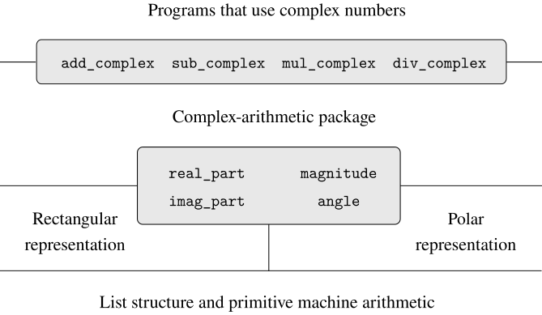

One way to view data abstraction is as an application of the
principle of least commitment. In implementing the
complex-number system in
section 2.4.1, we can
use either Ben's rectangular representation or Alyssa's polar
representation. The abstraction barrier formed by the selectors and
constructors permits us to defer to the last possible moment the choice of
a concrete representation for our data objects and thus retain maximum
flexibility in our system design.
The principle of least commitment can be carried to even further extremes.
If we desire, we can maintain the ambiguity of representation even
after we have designed the selectors and constructors, and elect
to use both Ben's representation and Alyssa's
representation. If both representations are included in a single system,
however, we will need some way to distinguish data in polar form from data
in rectangular form. Otherwise, if we were asked, for instance, to find
the magnitude of the pair
$(3,4)$, we wouldn't know whether to
answer 5 (interpreting the number in rectangular form) or
3 (interpreting the number in polar form). A straightforward way to
accomplish this distinction is to include a
type tag—the
string "rectangular"
or
"polar"—as
part of each complex number. Then when we need to manipulate a complex
number we can use the tag to decide which selector to apply.
In order to manipulate tagged data, we will assume that we have
functions
type_tag
and contents that extract from a data object
the tag and the actual contents (the polar or rectangular coordinates, in
the case of a complex number). We will also postulate a
function
attach_tag
that takes a tag and contents and produces a tagged data object. A
straightforward way to implement this is to use ordinary list structure:
function is_rectangular(z) {
return type_tag(z) === "rectangular";
}
function is_polar(z) {
return type_tag(z) === "polar";
}
With type tags, Ben and Alyssa can now modify their code so that their two
different representations can coexist in the same system. Whenever Ben
constructs a complex number, he tags it as rectangular. Whenever Alyssa
constructs a complex number, she tags it as polar. In addition, Ben and
Alyssa must make sure that the names of their
functions
do not conflict. One way to do this is for Ben to append the suffix
rectangular to the name of each of his
representation
functions
and for Alyssa to append polar to the names of
hers. Here is Ben's revised rectangular representation from
section 2.4.1:
function real_part_rectangular(z) { return head(z); }
function imag_part_rectangular(z) { return tail(z); }
function magnitude_rectangular(z) {
return math_sqrt(square(real_part_rectangular(z)) +
square(imag_part_rectangular(z)));
}
function angle_rectangular(z) {
return math_atan2(imag_part_rectangular(z),
real_part_rectangular(z));
}
function make_from_real_imag_rectangular(x, y) {
return attach_tag("rectangular", pair(x, y));
}
function make_from_mag_ang_rectangular(r, a) {
return attach_tag("rectangular",
pair(r * math_cos(a), r * math_sin(a)));
}
and here is Alyssa's revised polar representation:
そしてAlyssaの改訂版極表現は次のとおりです：
function real_part_polar(z) {
return magnitude_polar(z) * math_cos(angle_polar(z));
}
function imag_part_polar(z) {
return magnitude_polar(z) * math_sin(angle_polar(z));
}
function magnitude_polar(z) { return head(z); }
function angle_polar(z) { return tail(z); }
function make_from_real_imag_polar(x, y) {
return attach_tag("polar",
pair(math_sqrt(square(x) + square(y)),
math_atan2(y, x)));
}
function make_from_mag_ang_polar(r, a) {
return attach_tag("polar", pair(r, a));
}
Each generic selector is implemented as a
function
that checks the tag of its argument and calls the appropriate
function
for handling data of that type. For example, to obtain the real part of
a complex number,
real_part
examines the tag to determine whether to use Ben's
real_part_rectangular
or Alyssa's
real_part_polar.
In either case, we use contents to extract the
bare, untagged datum and send this to the rectangular or polar
function
as required:
function real_part(z) {
return is_rectangular(z)
? real_part_rectangular(contents(z))
: is_polar(z)
? real_part_polar(contents(z))
: error(z, "unknown type -- real_part");
}
function imag_part(z) {
return is_rectangular(z)
? imag_part_rectangular(contents(z))
: is_polar(z)
? imag_part_polar(contents(z))
: error(z, "unknown type -- imag_part");
}
function magnitude(z) {
return is_rectangular(z)
? magnitude_rectangular(contents(z))
: is_polar(z)
? magnitude_polar(contents(z))
: error(z, "unknown type -- magnitude");
}
function angle(z) {
return is_rectangular(z)
? angle_rectangular(contents(z))
: is_polar(z)
? angle_polar(contents(z))
: error(z, "unknown type -- angle");
}
To implement the complex-number arithmetic operations, we can use the same
functions
add_complex,
sub_complex,
mul_complex,
and
div_complex
from section 2.4.1,
because the selectors they call are generic, and so will work with either
representation. For example, the
function
add_complex
is still
Finally, we must choose whether to construct complex numbers using
Ben's representation or Alyssa's representation. One
reasonable choice is to construct rectangular numbers whenever we have
real and imaginary parts and to construct polar numbers whenever we have
magnitudes and angles:
function make_from_real_imag(x, y) {
return make_from_real_imag_rectangular(x, y);
}
function make_from_mag_ang(r, a) {
return make_from_mag_ang_polar(r, a);
}

Figure 2.32
Structure
of the generic complex-arithmetic system.
The resulting complex-number system has the structure shown in
figure 2.32.
The system has been decomposed into three relatively independent parts: the
complex-number-arithmetic operations, Alyssa's polar implementation,
and Ben's rectangular implementation. The polar and rectangular
implementations could have been written by Ben and Alyssa working
separately, and both of these can be used as underlying representations by
a third programmer implementing the complex-arithmetic
functions
in terms of the abstract constructor/selector interface.
Since each data object is tagged with its type, the selectors operate on
the data in a
generic manner. That is, each selector is defined to have a
behavior that depends upon the particular type of data it is applied to.
Notice the general mechanism for interfacing the separate representations:
Within a given representation implementation (say, Alyssa's polar
package) a complex number is an untyped pair (magnitude, angle). When a
generic selector operates on a number of polar
type, it strips off the tag and passes the contents on to Alyssa's
code. Conversely, when Alyssa constructs a number for general use, she
tags it with a type so that it can be appropriately recognized by the
higher-level
functions.
This discipline of stripping off and attaching tags as data objects are
passed from level to level can be an important organizational strategy,
as we shall see in section 2.5.